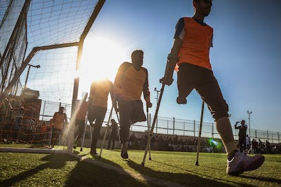

Who Are We?
We are an orginization who wantes to restore that what is lost and to and to improve what is already there.
To let people who don't have limbs or can't move their limbs the ability to walk, run, swim and more.
In a way that hasn't really been done before.
Most normal prosethics could take weeks, months or even a year for prople to learn walk with them. And along with that you lose the sense touch with in that arm.
We are trying to make the transition of prothetic seemless. Instead of you learning how to use it, it learns how you want to use it.
Those who are not disabled but are paralyzed we'll create a exoskoton to allow them walk with ease and comfort as someone who isn't paralyzed
We plan to improve the way we use techology.

Our goals
- To connect the neural passageways to a exoskoton in an noninvasive way like through implants and surgery
- Have our users get a voice in our progress
- To make our product more accessible, usable, wearable and subtle
- Aid strength to the paralyzed and unparalyzed
Our values
- Our product is going to be accessible to people everywhere and anywhere.
- It's to be accessible to people to anyone regardless of their status.